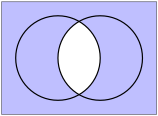

Chapter 4 Unions and Intersections
Exercises Practice Problems
1. Making Sets From Other Sets.
Let \(A= \{ x \mid 1 < x < 5 \}\text{,}\) \(B = \{ x \mid 5 \leq x \leq 7 \}\) and \(C= \{ x \mid 2 < x < 8 \}\text{,}\) where \(x\) represents a real number. Write the following sets in "set builder" notation.
\(A \cup C \text{.}\) Solution.
\[ A \cup C = \{ x \mid 1 < x < 8 \} \]
\(A \cap B\text{.}\) Solution.
\[ A \cap B = \emptyset \ \]
\((A \cup B ) \cap C\text{.}\) Solution.
\[ (A \cup B) \cap C = \{ x \mid 2 < x < 7 \} \]
\(A \cap \overline{C}\text{.}\) Solution.
\[ A \cap \overline{C} = \{ x \mid 1 < x \leq 2 \} \ \]
2. Union and Intersection.
The concepts of union and intersection naturally correspond to the concepts of "or" and "and." Let's make this more concrete. Let \(P(x)\) and \(Q(x)\) be statements, and define \(A = \{ x \mid P(x) \mbox{ is true} \}\) and \(B = \{ x \mid Q(x) \mbox{ is true} \}\text{.}\) Find a simple way to write each of \(A \cup B\) and \(A \cap B\) using set builder notation. Next, how would you write \(A \backslash B\text{?}\) Solution.
3. DeMorgan's Law.
Consider the following DeMorgan Law: \[ \overline{(A \cap B)} = \overline{A} \cup \overline{B}. \]
-
Prove this law using a Venn diagram
Both of your Venn diagrams will look like this:
 Prove this law using a carefully argued double inclusion proof. Solution.
First, we prove that if \(x \in \overline{(A \cap B)}\) then \(x \in \overline{A} \cup \overline{B}\text{.}\)
\begin{equation*} \begin{array}{rcl} x \in \overline{(A \cap B)} & \Rightarrow & \mbox{ NOT } ( x \in A \cap B) \\ & \Rightarrow & \mbox{ NOT } ( x \in A \mbox{ AND } x \in B) \\ & \Rightarrow & \mbox{ NOT } ( x \in A) \mbox{ OR } \mbox{NOT } ( x \in B) \\ & \Rightarrow & x \in \overline{A} \mbox{ OR } x \in \overline{B} \\ & \Rightarrow & x \in \overline{A} \cup \overline{B} \\ \end{array} \end{equation*}Let's talk about that third step, since this is a new idea. We know that the statement "\(x \in A\) AND \(x \in B\)" is FALSE. So (at least) one of these statements is FALSE. In other words, either \(x \notin A\) or \(x \notin B\text{.}\)
Next, we prove that if \(x \in \overline{A} \cup \overline{B}\) then \(x \in \overline{(A \cap B)}\text{.}\) If you look carefully, this is just the previous argument in reverse. (This happens for simpler problems.)
\begin{equation*} \begin{array}{rcl} x \in \overline{A} \cup \overline{B} & \Rightarrow & x \in \overline{A} \mbox{ OR } x \in \overline{B} \\ & \Rightarrow & \mbox{ NOT } ( x \in A) \mbox{ OR } \mbox{NOT } ( x \in B) \\ & \Rightarrow & \mbox{ NOT } ( x \in A \mbox{ AND } x \in B) \\ & \Rightarrow & \mbox{ NOT } ( x \in A \cap B) \\ & \Rightarrow & x \in \overline{(A \cap B)} \\ \end{array} \end{equation*}Let's talk about the third step in this case. We know that either \(x \notin A\) or \(x \notin B\text{.}\) Therefore is is NOT true that "\(x \in A\) and \(x \in B\) are both true".
4. Distributive Laws.
Prove the following distributive laws in two ways. First, using a Venn diagram, and then using a double inclusion proof.
\(A \cap (B \cup C) = (A \cap B) \cup (A \cap C)\) Solution.
This argument works backwards and forward. So this proves the double inclusion of these sets.
\begin{equation*} \begin{array}{rcl} x \in A \cap (B \cup C) &\Longleftrightarrow& x \in A \mbox{ AND } (x \in B \mbox{ OR } x \in C) \\ &\Longleftrightarrow& x \in A \cap B \mbox{ OR } x \in A \cap C \\ &\Longleftrightarrow& x \in (A \cap B) \cup ( A \cap C) \\ \end{array} \end{equation*}\(A \cup (B \cap C) = (A \cup B) \cap (A \cup C)\) Solution.
Once again, this argument works backwards and forward. So this proves the double inclusion of these sets.
\begin{equation*} \begin{array}{rcl} x \in A \cup (B \cap C) &\Longleftrightarrow& x \in A \mbox{ OR } ( x \in B \mbox{ AND } x \in C) \\ &\Longleftrightarrow& (x \in A \mbox{ OR } x \in B) \mbox{ AND } (x \in A \mbox{ OR } x \in C) \\ &\Longleftrightarrow& x \in (A \cup B) \cap (A \cup C) \end{array} \end{equation*}This argument does work, but it does have one subtlety. If \(x \notin A\) then each condition forces \(x\) to be an element of both \(B\) and \(C\text{.}\)